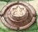

| 概要 | 情報 | アイテム一覧 |
| 敵キャラ一覧 | ステージ一覧 | 夢幻迷宮について |
| 攻略チャート | Zwei!! 攻略へ |
| ステージ選択へ |
セルペンティナ Lv.20
| 0 | スタート地点です。 |
| A | A地点にいるこぼるとを倒すと、同じ部屋にこぼるたんが現れます。 |
| B | B地点の扉は一方通行なので、あきらめましょう。 また、C'地点から落ちてきたときは、扉をくぐらないようにしましょう。時間の無駄です。 |
| C | C地点には、大砲や敵がたくさんいます。 それなりの対策をしておかないと、あっという間に大打撃を受けます。 |
| D | D地点のこぼるたんを倒すと、敵が大量に現れます。 部屋の中央にいると、危険なのですぐに通路へ移動しましょう。 |
| E | E地点の風船を割ると、その都度敵が現れます。 |
| F | F地点の風船を割ると、後ろに敵が現れます。 |
| G  |
G、G'地点のボタンスイッチをONにすると、G''地点の扉が開きます。 ただし、G'地点のスイッチをONにすると、部屋にたくさん敵が現れます。 |
| C' | C'地点に移動すると、足場が崩れ、下の階へ移動します。 |
| H | 階段を上った直後のH地点に敵が待ちかまえています。 狭いので落ち着いて対処しましょう。 |
I |
I地点はフックロープを使って移動します。 |
| J | J地点の障壁を破壊すると、周囲に大量の敵が現れます。 離れたところから破壊した方が無難です。 |
| ステージ選択へ |
| 概要 | 情報 | アイテム一覧 |
| 敵キャラ一覧 | ステージ一覧 | 夢幻迷宮について |
| 攻略チャート | Zwei!! 攻略へ |
Zwei!!
| 目次へ戻る | ページの上部へ |